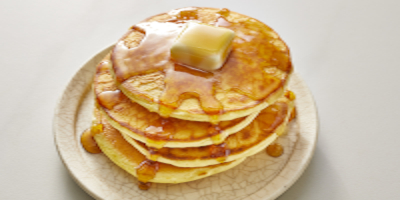

Good Ol' Fashioned Pancakes

Cook: 15 minutes
Total: 20 minutes
Prep: 5 minutes
Servings: 8 servings
Yield: 8 pancakes
Ingredients
- 1 1/2 cups all-purpose flour
- 3 1/2 teaspoons baking powder
- 1/4 teaspoon salt, or more to taste
- 1 tablespoon white sugar
- 1 1/4 cups milk
- 1 egg
- 3 tablespoons butter, melted
Directions
- In a large bowl, sift together the flour, baking powder,
salt and sugar. Make a well in the center and pour in the milk,
egg and melted butter; mix until smooth.
- Heat a lightly oiled griddle or frying pan over medium-high
heat. Pour or scoop the batter onto the griddle, using
approximately 1/4 cup for each pancake. Brown on both sides and
serve hot.
Nutrition Facts
Per Serving: 158 calories; protein 4.5g;
carbohydrates 21.7g; fat 5.9g; cholesterol 37.7mg; sodium
503.6mg.